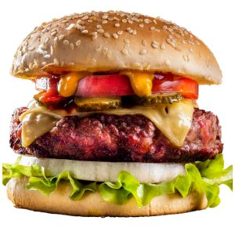

Como prepar una Hamburgues

Descripcíon
Las hamburguesas caseras son saludables y muy sabrosas
Su consumo es polémico: temido por muchos, amado por otros, despierta pasiones encontradas en la mayoría de comensales que, cuando degustan una rica hamburguesa no pueden evitar sentir cierta culpabilidad. Por ello, te hemos traído desde Gurmé esta receta de hamburguesas caseras, que además de saludables, están riquísimas. Así, las hamburguesas caseras dejan de ser un pecado para convertirse en un rico plato proveniente del recetario más tradicional. Al fin y al cabo es carne picada y frita. Con estos pasos conseguirás aprender cómo hacer hamburguesas caseras muy sabrosas de manera rápida y sencilla. Eso sí: tienes que estar dispuesto a mancharte las manos.Todos podemos cenar en casa hamburguesas saludables y exquisitas, pero hemos de conocer bien sus secretos.
Por ello, tras de contarte paso a paso cómo hacer hamburguesas en casa, te damos los trucos para que no cometas ningún error.
Ingredientes
- 1 kilo de carne picada
- 1 cebolla
- 1 huevo
- 3 dientes de ajo
- Perejil fresco
- Sal
- Pimienta
- Salsa de mostaza
- 1 pieza de pan duro
- Aceite de oliva
Pasos
- Lo primero que debes hacer para conseguir una hamburguesas con una textura única es poner el pan duro (puede ser del día anterior) en remojo: colócalo en un recipiente hondo y cúbrelo de agua natural. Deja que empape bien.
- Mientras se empapa bien el pan comenzamos a picar los ingredientes: primero la cebolla muy finita y luego lo dientes de ajo, también en trozos pequeños.
- Continuamos picando finamente el perejil fresco. Una vez picados todos estos ingredientes, los reservamos.
- Salpimentamos la carne al gusto. Colocamos ésta en un recipiente lo suficientemente grande para que nos permita trabajar luego cómodamente con ella.Escurrimos el pan y lo colocamos junto a la carne. Añadimos también el huevo, la cebolla y el ajo, el perejil y la salsa de mostaza, que dará un sabor singular a este plato.
- Ha llegado el momento más divertido: el de mancharnos las manos. Hay que mezclar bien todos los ingredientes de manera que quede una masa homogénea.
- Una vez conseguida esa masa, hay que hacer bolas medianas con la carne, como si se tratasen de albóndigas, pero en lugar de dejarlas completamente redondas, achatarlas un poco. Así conseguiremos la característica forma de las hamburguesas.
- En una sartén grande pon aceite a calentar. Cuando esté lo suficientemente caliente, añade las hamburguesas y fríelas hasta que se doren al gusto.
- Una vez estén fritas ve retirándolas del fuego y colócalas en un plato.
- Puedes tomarlas a la manera habitual: con pan, acompañada de una loncha de queso y algunas verduras y salsas, o bien de una manera más ligera, sin pan ni acompañamientos, e incluso, puedes darle un toque gourmet con algún queso manchego, de cabra o incluso queso azul y un poco de cebolla caramelizada.